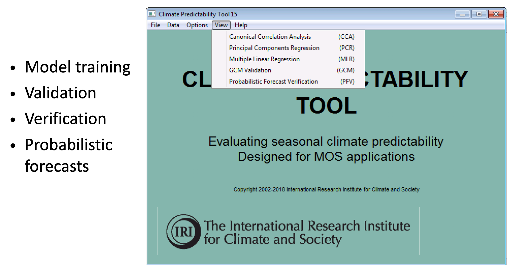
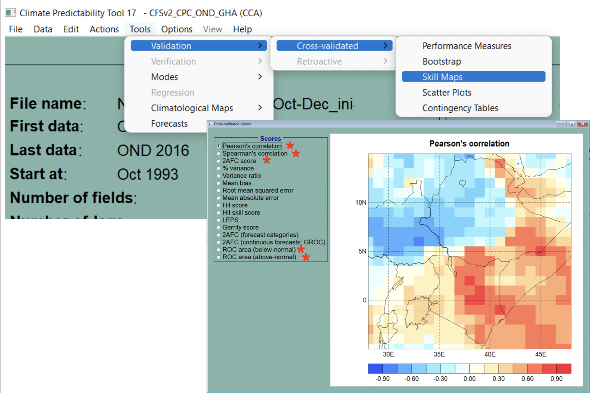
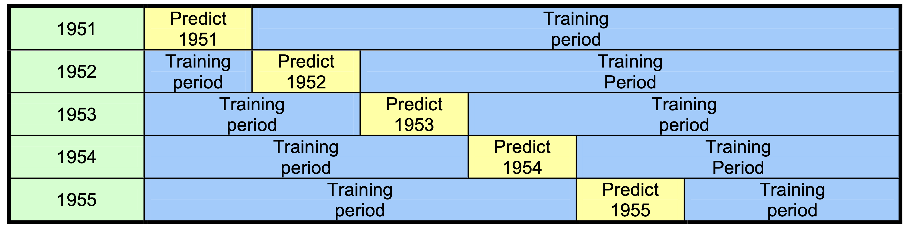
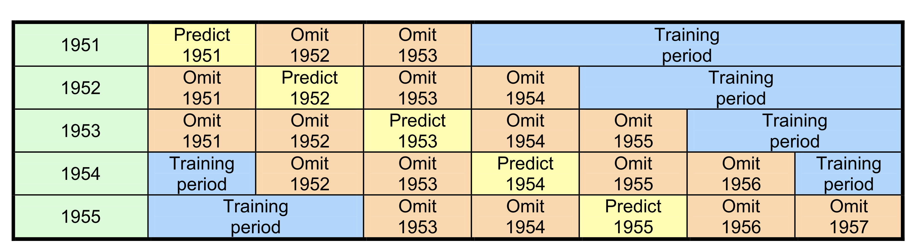
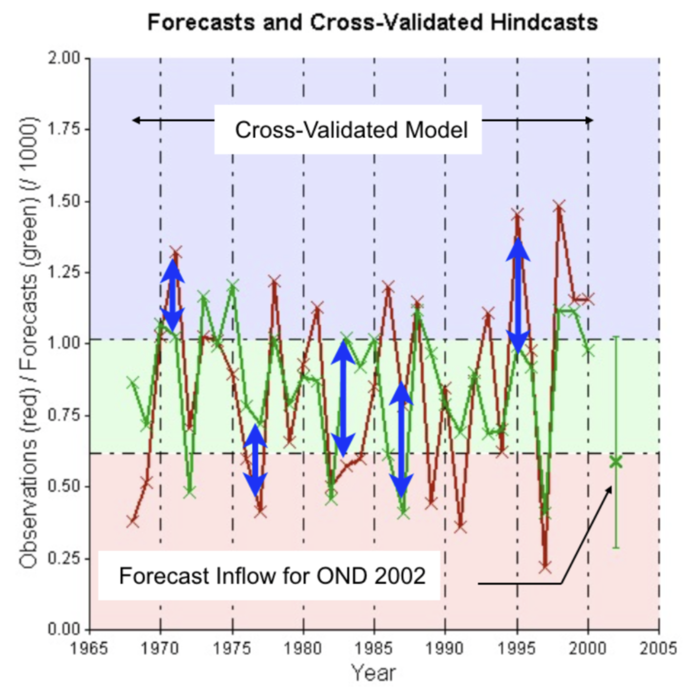

The Climate Predictability Tool (CPT)#
{kind=link}
IRI created the Climate Predictability Tool (CPT)—at the heart of PyCPT—to facilitate the development of best-practices in statistical/empirical seasonal climate forecasting for NMHSs using multiple linear regression. These were typically based on slowly-evolving SST patterns associated with ENSO as predictors. CPT uses the principle of cross-validation to build and validate multiple linear regression models, and to select the best model.
Because seasonal climate predictability in the tropics involves spatially-correlated patterns of precipitation anomalies associated with patterns of ENSO SST variations, CPT provides two types of pattern regression: Canonical Correlational Analysis (CCA) and Principal Components Regression (PCR).
PCR considers a univariate predictand (at a local gridpoint), together with a truncated set of the Principal Components (PCs) of the predictor field; it enables a data compression of a large field of predictor grid points that is optimal in variance, with statistically independent predictor time series.
CCA compresses both a high-dimensional predictor and a high-dimensional predictand field into a few components of each (the CCA modes), such that the timeseries of these components are maximally correlated between predictor and predictand fields. The CCA modes consist of linear combinations of the leading EOFs of the predictor and predictand fields.
1. Regression model validation (and selection)#
{kind=link}
The CPT model validation and selection workflow is as follows:
Test the performance of the regression model using independent data
This is done using cross-validation in CPT
Various skill scores are used to assess the validity of the model
Note that these are all deterministic skill scores because the regression model is deterministic
Validation enables the best model to be selected.
Warning
“Trying too hard” can lead to overestimating the skill just by chance; this is called selection bias.
2. Cross-Validation#
Cross-validation consists of training a new CCA/PCR model for each hindcast year, omitting that year from the training data set. This is called “leave 1 out” cross-validation and enables the resulting model to be properly tested against the observation year that was withheld from the training.
{kind=link}
Leaving out more years reduces the negative bias in skill that arises with leave 1 out cross-validation, although leaving too many years out causes large sampling errors. Good compromises are to leave 3 or 5 years out.
{kind=link}
#
3. Probabilistic forecasts#
Once a suitable PCR or CCA regression model has been established, CPT uses it to create probabilistic forecasts. However, the regression model is deterministic. Probabilistic forecasts are created by assuming a parametric form for the forecast PDF (for example a normal bell-curve). The regression model provides the mean of the forecast PDF; its variance (spread) is determined from the errors of the regression model’s cross-validated hindcasts. Setting the forecast spread to equal the model’s error-variance ensures that the resulting probabilistic forecasts are well calibrated - i.e., that their confidence reflects their historical accuracy.
(add equation for the forecast pdf)
{kind=link}